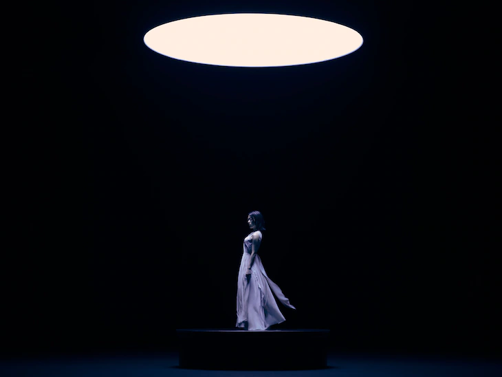

不滅のあなたへ
NHK・Eテレにて2021年4月12日（月）より放送がスタート
サブタイトルは”永遠の旅がはじまる”
トレーラーなどの情報を見るに”キノの旅”という印象を受けます。
巡る地により人々の生活の違いが目まぐるしく変わる展開になるのでしょうか
詳細は公式サイトで確認してください。
”不滅のあなたへ”公式サイトPINK BLOOD
MVは現在制作中は現在製作中とのことです
曲が気になる方はアニメを観よう！
雰囲気はめちゃくちゃ好きです。
そして何より”宇多田ヒカル”さんだなって感じの曲だと思いました
Googleトレンド状況
2021年04月13日時点での推移
アニメ放送近辺のアクセスの急上昇具合がすごいですね。
二話以降もこの調子で急上昇するのか気になるところです。
あとがき
個人的に世界観が凄く気になるアニメなので簡潔したらレビュー書くかもしれません。
”宇多田ヒカル”さんの音楽が神秘的な感じがして凄く好きです。
キングダムハーツのイメージが凄く強いアーティストだと思います